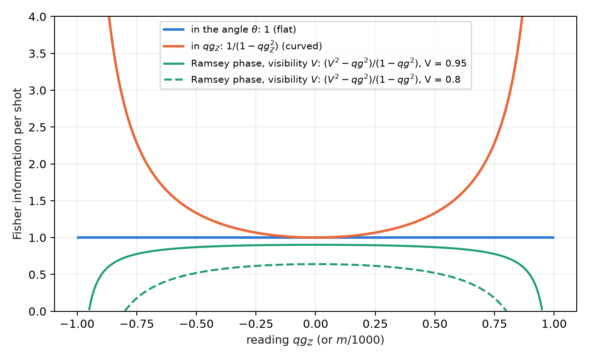
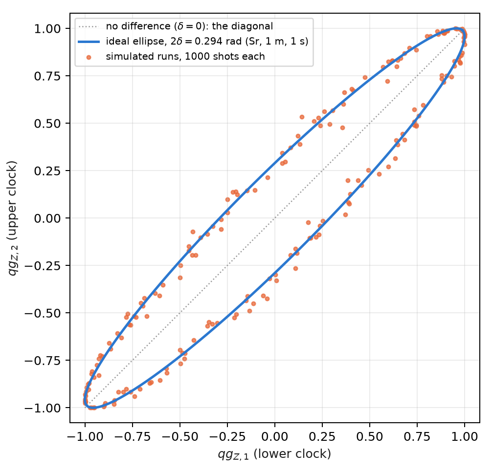
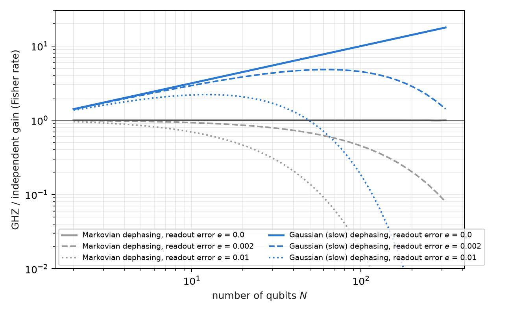

8 Fisher information, clocks, gravity and metrology
Metrology is the discipline of measuring a parameter with the smallest possible uncertainty, and its central tool is the Fisher information: how much each shot teaches about the parameter. This chapter writes it on the base of Chapter 1. The probability equation \(p_0=\cos^2(\theta/2)\) fixes how much information each reading carries, and from it follow the resolution in milli-qang, the operating point of an interferometer, the comparison of two atomic clocks one metre apart in height, the advantage (and the limits) of entanglement, and the thermometry of a qubit.
8.1 From the base: the information in one shot
A shot in the \(Z\) basis is a coin with probability \(p_0\). Its Fisher information about the angle is
\[ F_\theta=\frac{(dp_0/d\theta)^2}{p_0(1-p_0)}=\frac{\sin^2\theta/4}{\sin^2\theta/4}=1 , \]
constant over the whole sphere; about the reading \(qg_Z=\cos\theta\), by contrast, it is \(F_{qg}=1/(1-qg_Z^2)\), growing towards the poles. The qang angle is the flat coordinate of the information and \(qg_Z\) the curved one (Figure 8.1). The two descriptions are the same physics: the \(1/N\) variance of the angle in Chapter 1 is the Cramér–Rao bound in the flat coordinate (§167).

Expressed in milli-qang, the bound gives the resolution of a reading:
\[ \sigma_m=\frac{1000\,|\sin\theta|}{\sqrt N}\ \text{m-qg},\qquad N=\left(\frac{1000\sin\theta}{\delta}\right)^2 \ \text{shots to resolve } \delta\ \text{m-qg}. \]
On the equator, resolving 10 m-qg takes \(10^4\) shots and resolving 1 m-qg, \(10^6\); at 60° from the pole, 5 m-qg cost 30 000. Near a pole the reading is more precise in m-qg, but one m-qg there corresponds to a larger angle: a state \(\delta\) m-qg from the pole is \(\arccos(1-\delta/1000)\approx\sqrt{2\delta/1000}\) radians away, 2.56° for 1 m-qg.
8.2 Information geometry and the natural gradient
The many-parameter version of the Fisher information is the Fubini–Study metric, and it governs the natural gradient: descent that measures its steps in distance between states, not between parameters. In a real ansatz of \(R_Y\) rotations and CZ gates, every state of the circuit is real, \(\langle Y_k\rangle=0\) before each rotation and every diagonal entry of the metric is exactly \(\tfrac14\): the angles are flat one by one, and all the curvature sits in the off-diagonal terms, which within a layer are correlators \(\langle Y_iY_j\rangle/4\), measurable with one circuit per layer (§159).
Two practical consequences, checked on a 4-qubit Ising chain with 20 seeds: descent in qg coordinates never converges (0 of 20), because the curved coordinate distorts the steps; and the natural gradient with the qg\(_{YY}\) block metric is 1.3 times faster than descent in the angle, and 4.6 times with the full metric. The gain comes from the metric, not from changing coordinates: the natural gradient in qg is Euclidean descent in \(\theta\). The rule is to optimize in the angle and read out in qg.
8.3 Two clocks and gravity
An atomic clock measures a phase, and two clocks at different heights tick at different rates: the gravitational redshift. Read with the same laser, they give \(qg_{Z,1}=\cos(\varphi+\delta)\) and \(qg_{Z,2}=\cos(\varphi-\delta)\), where \(\varphi\) is a random common phase (the laser noise) and \(2\delta\) the difference sought. Even with \(\varphi\) unknown, the pairs of readings lie on the ellipse
\[ x^2+y^2-2xy\,c=1-c^2,\qquad c=\cos2\delta , \]
so the difference is read from the shape of the cloud, without controlling the common phase (Figure 8.2). For two strontium clocks 1 m apart, \(2\delta=2\pi\nu\,gh\,t/c^2=0.294\) rad in one second.

Fitting the ellipse needs the squares of the readings, and there the unbiased estimator of \(qg^2\) from Chapter 4 comes in: without the correction, the shot-noise bias flattens the ellipse. All four recorded predictions passed (§126):
| check | result |
|---|---|
| relative bias, 1000 shots, 200 runs, four values of \(\delta\) | +0.09%, +0.12%, +0.05%, −0.07% |
| spread of the ellipse fit against the moment estimator (\(\delta=0.15\)) | 0.0022 against 0.0075 |
| bias with 100 shots, without and with the correction | +11.8% and +0.9% |
| strontium, 1 m, 1 s | \(\delta=0.1471\); estimate \(0.1472\pm0.0022\) (68σ) |
In this idealized model the spread corresponds to about 1.5 cm of height per 200 runs. The limits are stated: no laser decoherence during the Ramsey time, contrast 1 and binomial projection noise.
8.4 Ramsey sensing: where to operate
A Ramsey interferometer turns a phase into a probability: \(qg=a+bV\cos(\varphi-\alpha)\), with visibility \(V\), operating point \(\alpha\) and the read-out map \((a,b)\) of Chapter 27. With ideal read-out, the information per shot about the phase is
\[ F=\frac{V^2-qg^2}{1-qg^2}. \]
With \(V=1\) it is flat, \(F=1\) everywhere: the \(1/(1-qg^2)\) gain at the poles is exactly cancelled by the Jacobian. With \(V<1\) the optimum is the middle of the fringe, \(qg=0\), and the information vanishes at the bright fringe (Figure 8.1). This is the known practice of operating at quadrature, written in qg (§36). Three measured nuances:
- Read-out asymmetry moves the optimum, but it does not matter: moving to the new optimum gains 0.17% with the calibrated read-out, and 1.6% even with a 10% read-out error.
- With few shots a prior helps: with 10 shots, the Bayesian posterior mean is about 2 times better than direct inversion, because the prior range of the phase carries information.
- With visibility 0.9, operating at the pole gets worse with more shots (the scaled error goes from 1.09 to 2.50 between 10 and 1000 shots): small phases become invisible there. The middle of the fringe tracks its bound (1.11–1.24, with bound 1.12).
8.5 GHZ metrology: when entanglement wins
With \(N\) qubits a frequency \(\omega\) can be measured in two ways: \(N\) independent Ramsey clocks, or a GHZ state, whose parity \(X_1\cdots X_N\) is a single qg value of the whole register, \(qg_P=V_N\cos(N\omega t)\), oscillating \(N\) times faster. The advantage is paid for in visibility, which falls as the \(N\)-th power of that of one qubit. At mid-fringe the information per shot is \(V^2\), and per unit time (§58):
\[ \text{independent: } N\,t\,e^{-2t/T_2}(1-2e)^2,\qquad \text{GHZ: } N^2\,t\,e^{-2Nt/T_2}(1-2e)^{2N}, \]
with \(e\) the read-out error per qubit. Optimizing the interrogation time:
| \(N\) | Markovian, \(e=0\) | \(e=0.002\) | \(e=0.01\) | Gaussian, \(e=0\) | \(e=0.002\) | \(e=0.01\) |
|---|---|---|---|---|---|---|
| 2 | 1.000 | 0.992 | 0.960 | 1.414 | 1.403 | 1.358 |
| 10 | 1.000 | 0.930 | 0.695 | 3.162 | 2.942 | 2.198 |
| 30 | 1.000 | 0.793 | 0.310 | 5.477 | 4.341 | 1.697 |
| 100 | 1.000 | 0.452 | 0.018 | 10.00 | 4.522 | 0.183 |

The table sums up three known results, here in a single qg reading. With Markovian dephasing there is no gain for any \(N\) (Huelga and co-workers, 1997), and with read-out error independent qubits are strictly better. With Gaussian, slow dephasing the gain grows as \(\sqrt N\), the Zeno-type limit (Matsuzaki and co-workers, 2011; Chin, Huelga and Plenio, 2012). And the read-out caps it: the parity carries \((1-2e)^N\), so there is an optimal size of the GHZ state, beyond which adding qubits makes the measurement worse (Figure 8.3).
8.6 Thermal states: \(qg_Z=\tanh(\beta h)\)
A qubit with \(H=-hZ\) in equilibrium at temperature \(T\) (with \(k_B=1\)) is in the Gibbs state, and its polar bias is
\[ qg_Z=\tanh(\beta h),\qquad \beta=1/T . \]
The whole thermodynamics of the qubit is then a function of a single reading (§25):
| quantity | in qg |
|---|---|
| energy | \(U=-h\,qg\) |
| entropy (bits) | \(S=qg_S(qg)\), exact because \(\rho\) is diagonal in \(Z\) |
| free energy | \(F=-T\ln\!\big(2/\sqrt{1-qg^2}\big)\) |
| heat capacity | \(C/k_B=\operatorname{artanh}(qg)^2\,(1-qg^2)\) |
| preparation angle | \(\theta=\arccos(qg)=\pi/2-\operatorname{gd}(\beta h)\) (Gudermannian) |
Thermometry. A \(Z\) measurement is an energy measurement, and therefore the optimal one on a Gibbs state; its Fisher information about \(T\) is \(C/T^2\). The best relative precision is at the maximum of the heat capacity:
\[ qg\cdot\operatorname{artanh}(qg)=1\quad\Rightarrow\quad qg^\ast=0.8336,\qquad \beta h=1.1997 , \]
the peak of the Schottky anomaly, the known optimal operating point of a two-level thermometer (Correa and co-workers, 2015), here as a one-line condition on the reading. The section is an exact rewriting of textbook thermodynamics, checked against \(e^{-\beta H}\) to \(5\cdot10^{-12}\); no advantage was expected or found.
8.7 Without qang and with qang
| action | without qang | with qang | difference |
|---|---|---|---|
| resolution of a reading | variance of \(\langle Z\rangle\), \((1-\langle Z\rangle^2)/N\), different at each point | information 1 per shot in the angle; \(\sigma_m=1000\lvert\sin\theta\rvert/\sqrt N\) | it is the usual Cramér–Rao bound; the angle makes it uniform |
| optimize a variational circuit | descent in the gate angles | descent in qg coordinates: does not converge (0 of 20); natural gradient with \(qg_{YY}\) correlators: 1.3× to 4.6× | against using \(qg_Z\) as a coordinate; the gain is the metric’s, not qang’s |
| compare two clocks | ellipse fit with naive squares: bias +11.8% at 100 shots | with unbiased \(qg^2\): +0.9% | in favour of the estimator; it is the standard correction, applied on the qg scale |
| optimal thermometry point | maximum of the heat capacity (Schottky) | \(qg\cdot\operatorname{artanh}(qg)=1\), \(qg^\ast=0.8336\) | same point; qang gives it as a one-line condition on the reading |
| GHZ gain | Fisher rates | the same rates, with a qg parity | none: the three results are known |
Balance. In metrology qang organizes: it puts the Cramér–Rao bound in a flat coordinate and gives one-line conditions. The single result against the qg coordinate is explicit: for optimization, the angle and the metric, not \(qg_Z\).
8.8 In code
from qang import probability
r = probability.analyze(750, 1000) # 750 zeros in 1000 shots, in every qang unit
# p0, qg_Z, m = 500.0 [444.5, 551.7] m-qg, theta = 60.0° [56.5°, 63.6°], qg_S, with intervals8.9 Summary
- Per shot, the information is 1 in the angle and \(1/(1-qg_Z^2)\) in \(qg_Z\); the resolution in m-qg is \(1000|\sin\theta|/\sqrt N\), the Cramér–Rao bound.
- The natural-gradient metric in a real ansatz has diagonal \(\tfrac14\) and \(qg_{YY}\) correlators; optimizing in qg coordinates does not converge, and the gain comes from the metric.
- Two clocks with a random common phase trace an ellipse; its shape gives the gravitational redshift at 1 m with 68σ in the model, if the bias of the squares is corrected.
- A Ramsey interferometer with visibility \(V<1\) is operated at mid-fringe; its information is \((V^2-qg^2)/(1-qg^2)\).
- The GHZ state gains nothing with Markovian dephasing, gains \(\sqrt N\) with slow dephasing and loses it to the read-out error raised to the \(N\).
- A thermal qubit has \(qg_Z=\tanh(\beta h)\); its best thermometry point is \(qg^\ast=0.8336\), the Schottky peak.